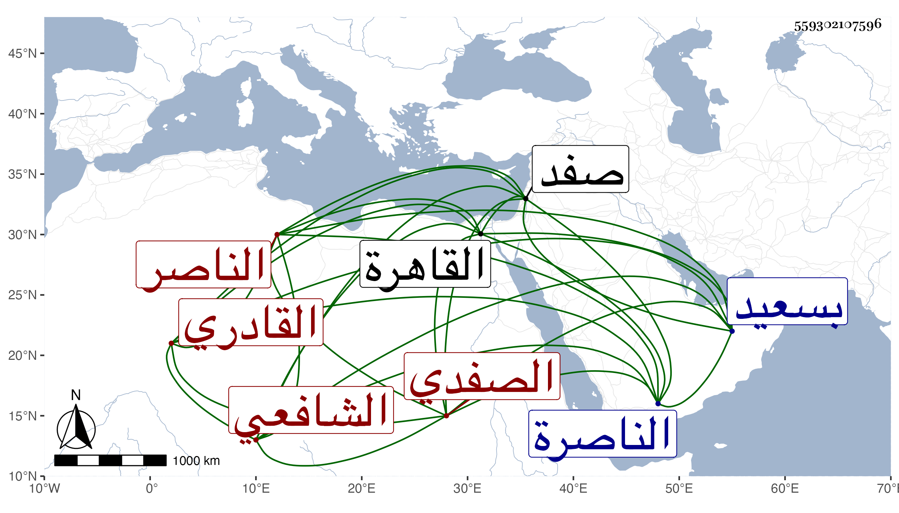

0902Sakhawi.DawLamic.ITO20230111-ara1.EIS1600.559302107596
Biography ID: 559302107596
403
محمد بن أبي بكر بن خضر بن موسى بن حريز بن حراز الشمس أبو عبد الله الصفدي الناصر الشافعي القادري ويعرف بابن الديري . ولد في العشر الأول من جمادى الأولى سنة ثمان وثمانين وسبعمائة فيما كتبه بخطه بدير الخليل من الناصرة بقرب صفد وقال إنه لبس الخرقة وتلقن الذكر في سنة عشرين من الشيخ محمد القادري الشامي وفي سنة اثنتين وعشرين من والده عن القطب الأردبيلي وفي سنة أربعين بسعيد السعداء من الشرف موسى بن محمد القادري . قلت ولقي شيخنا في سنة سبع وثلاثين وقرا عليه في موطأ مالك رواية أبي مصعب ووصفه بالشيخ الفاضل القدوة المفنن بل حكى لي والده الشمس محمد وهو ممن أخذ عني أنه لقيه بالقاهرة غير مرة وقرا عليه أشياء وكتب عنه من أماليه وضبط من فوائده جملة وقرض له على تصنيفه اختصار الترغيب الآتي وأنه كان يرشد العامة ويقرأ عليهم وأنه أخذ عن ابن رسلان في الفقه وغيره وأقام عنده مدة طويلة وتردد في أخذه عن ابن ناصر الدين انتهى . وممن أخذ عنه الزين قاسم الحيشي ومؤاخيه في الله البرهان القادري وقال إنه أول شيخ لبس منه الخرقة ووصفه بشيخنا وقدوتنا الإمام العالم العلامة القدوة المربي وأنه كان له تصانيف منها التقريب إلى كتاب الترغيب والترهيب . قال وكان نور تلك البلاد ، ووصفه البقاعي بالإمام وبيض له وكذا بيض له النجم عمر بن فهد في معجمه . مات في حادي عشرى ذي الحجة سنة اثنتين وستين ببلده ودفن عند آبائه برحبة الزاوية وقبورهم تزار رحمه الله وإيانا .
